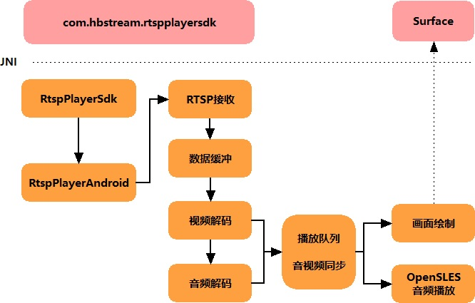
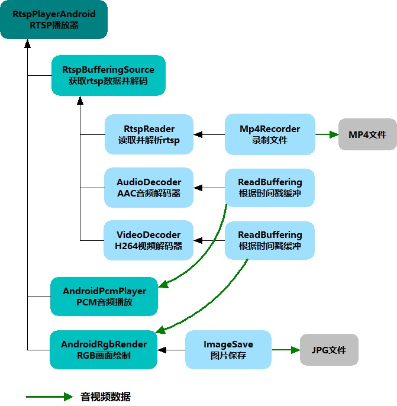
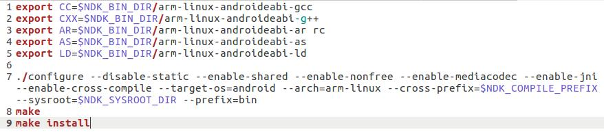
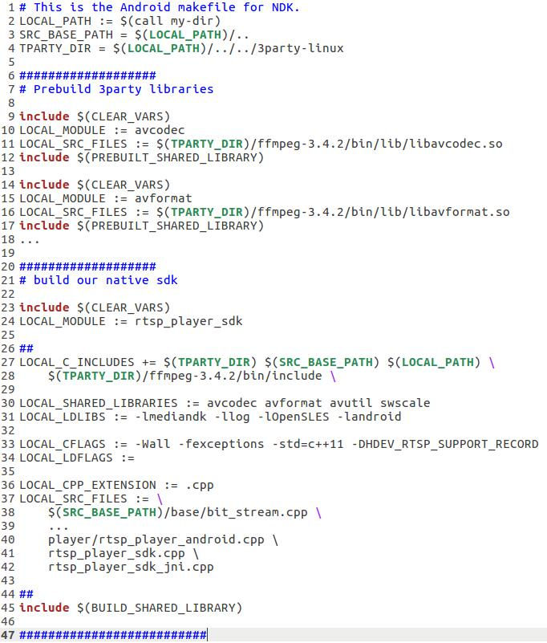
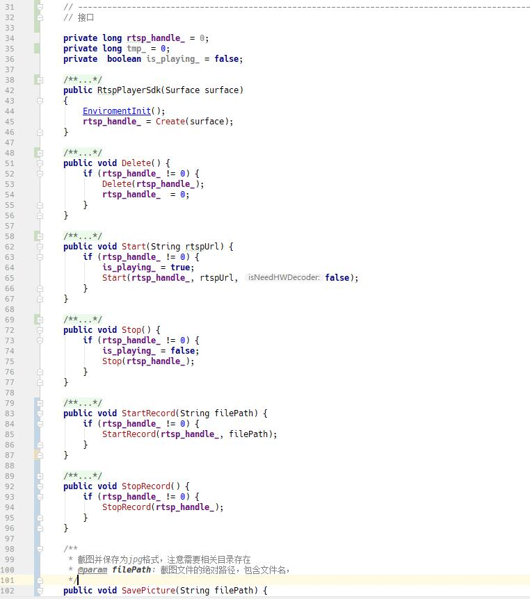
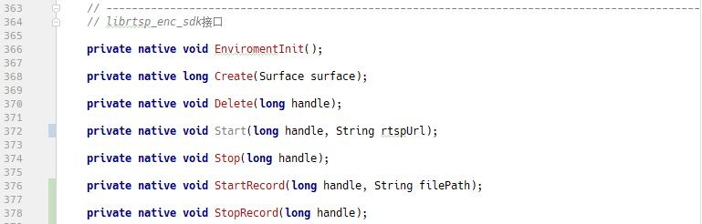
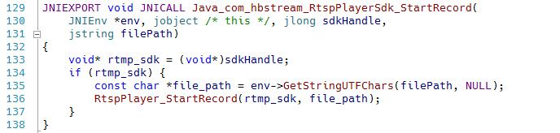
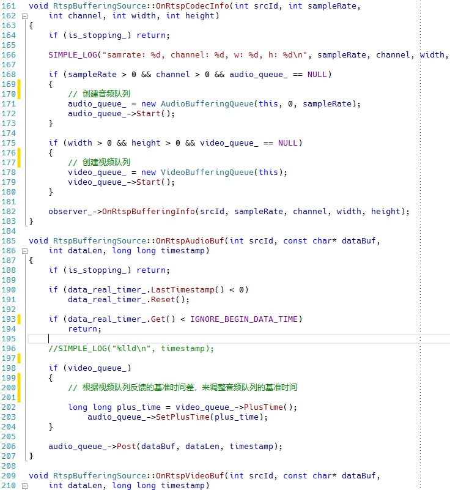
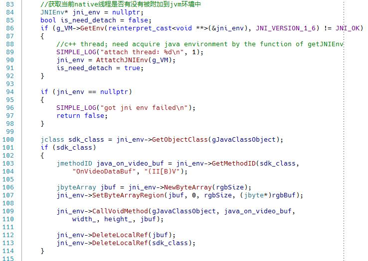
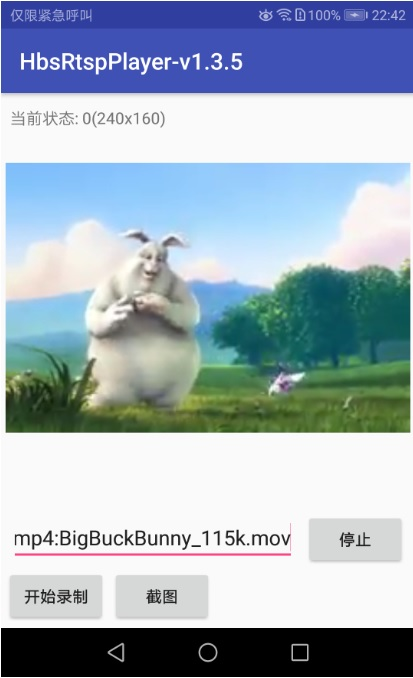

最近做了不少android端的开发，有推流、播放、直播、对讲等各种应用，做了RTMP、RTSP、HTTP-FLV、自定义等各种协议，还是有不少收获和心得的。我这边做，核心模块和核心代码部分，都是基于NDK，用C++开发的，然后将so动态库，在Android java环境中使用，这个既能保证核心部分的代码性能，也能最大程度复用之前写的流媒体相关的大量代码，实践证明，这样的程序架构，还是很有效的。这篇文章里，我打算描述一下我对于开发Android端RTSP播放器的程序框架，和设计思路，有相关需求的，希望能借此扩展下思路。
首先，既然是RTSP播放器，那必然要做RTSP的解析，这部分对我来说已经是非常熟悉了。我常用的RTSP解析代码，一般是基于Live555和FFMpeg的库，通过调用相关的接口，来实现RTSP客户端协议的数据接收，然后再做数据分析。这两种方式，各有适合的应用场景，兼容性也各有优劣，要根据具体项目具体选择。除非是整套都是自己做的RTSP服务器和RTSP客户端，否则我一般都是用他们两个，为的是最大程度的兼容第三方RTSP服务器，比如各种网络摄像头、各种设备、以及其他公司自己写的RTSP server等等，具体就不说了，做过类似的估计都清楚。当然，数据接收是需要做缓冲的，否则会卡顿，这个需要自己来做。
其次是解码，对于这点，为了保证内存使用效率，以及避免JNI调用开销，最好是在c++层来做。这个可以基于FFMpeg解码器或者MediaCodec解码器来写，不过要注意后者对Android的版本有要求。解码后需要对数据进行缓冲，按照时间戳进行排队。这个不管是直播还是点播，都需要做队列，否则同样会出现卡顿、音视频不同步，以及其他的情况，这个是非常重要的一点。
最后是渲染，这个可以选择在c++层绘制，或者回调上层，交给EGL来进行绘制，后者需要编写EGL代码，创建EGL surface，在渲染线程中进行绘制。
总结一下：

c++部分是主要代码，java层只需要做封装和调用操作即可

本人的交叉编译平台是ubuntu 64bit，编译成动态库，然后让APP通过JNI来调用，跟其他程序的编译方式差不多。当然，首先需要系统内布置好NDK编译环境。Google提供了完整的编译工具链，也包括SDK，下载地址在这里：“NDK Downloads”。我在之前的一篇文章里也写了这部分，可以参考一下："NDK开发Android端RTMP直播推流程序"。
对第三方库，我通常都是首先尝试NDK工具链的方式来编译，这样的好处，一个是工作量小，能直接使用项目的makefile，当前前提是先配置好编译环境，指定好交叉编译工具；另一个是不同的库的编译方式是相同的，很容易处理。这里以FFMpeg为例

第三方库准备好，这样就行了。
程序主体，直接写Android.mk，代码和预编译条件，链接参数等自己都清楚，也很方面控制编译输出。之前有篇文章里也有简单介绍，可以参考"NDK开发Android端RTMP直播推流程序"，具体的语法可以参考官方网站Android Developer。

写好后，调用ndk-build脚本编译，OK。
1.在写JNI封装接口的时候，一定要注意jni类型和c++类型的对应关系，尤其是注意返回值。本人就曾经因为jni接口返回值，和代码实现时候的不对应，从而导致android app调用接口的时候异常退出


其中一个接口对应的JNI c语言代码是这样的：

2.在按照时间戳做播放队列的时候，为了音频和视频的同步，必须注意音频和视频各自的时间戳，需要按照真实的时间进行还原。而当发现视频和音频不同步的时候，或者因为缓冲问题，导致视频需要丢包的情况下，需要及时调整音频播放队列的基准时间戳，避免音视频不同步的情况出现。同时，这样做也能避免长期累积造成的计算误差。

3.由于是手机端或者嵌入式设备端进行播放，因为需要考虑到设备性能不足的情况。这个时候，如果码流较大而设备来不及解码或者渲染，必须及时抛弃视频数据，否则会造成内存溢出，程序崩溃。同时在抛弃数据的时候，要考虑到关键帧的问题，也就是如果发生了抛帧，那么整个GOP的数据都应当放弃，除非是有冗余编码等编码技术，以此来避免花屏的情况，以及第2点列出的音视频同步问题。解决这几点，基本上就可以了。
4.当需要回调给java层，让EGL来渲染画面时，需要用到c++回调Java的技术手段。首先写好java层封装的回调接口，然后在c++代码中，通过JNI环境，获取到java层封装的类jclass对象和方法。注意在调用GetMethodID时，需要写正确函数的签名，例如我在java层的函数是
void OnVideoDataBuf(int width, int height, byte[] frameBuf)那么对应的签名是“(II[B)V”
以下是调用例子：

注意最后需要DetachCurrentThread()。
在手机端运行画面：

haibindev.cnblogs.com，合作请联系QQ或微信。（转载请注明作者和出处~）